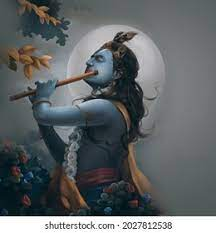

KRISHNA

Krishna, one of the most widely revered and most popular of all Indian divinities, is worshipped as
the eighth incarnation of the Hindu god Vishnu and also as a supreme god in his own right.
About the God
Om Sri Krishnah sharanam namah: This chant is a call to the beloved Lord Krishna where you pray to him to take you
under his shelter, surrendering yourself to him with utmost devotion.
This mantra is said to take away all the grief and miseries from your life and mind, giving you peace.
According to Lord Krishna, the first step is to gain clarity on any situation by developing a clear, calm and collected mind.
The Mahabharata features the divine discus as a weapon of Krishna, identified with Vishnu.
The deity beheads Shishupala with the Sudarshana Chakra at the rajasuya yajna of Emperor Yudhishthira.